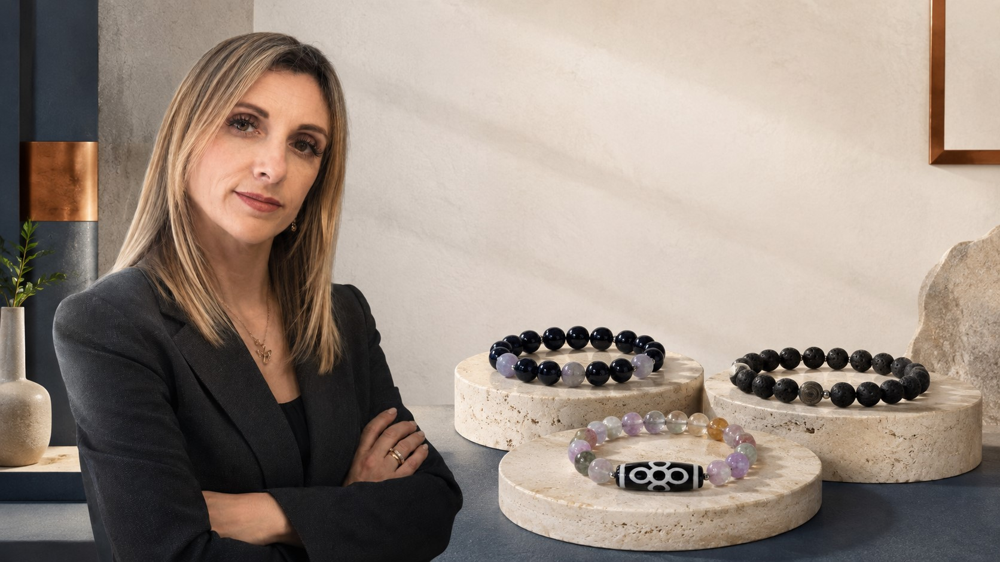
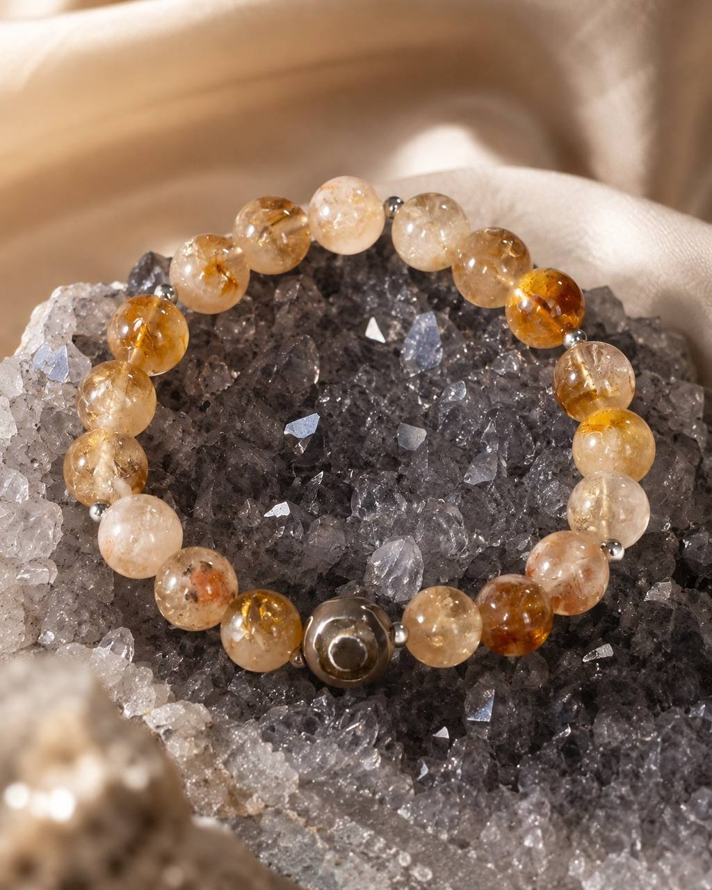
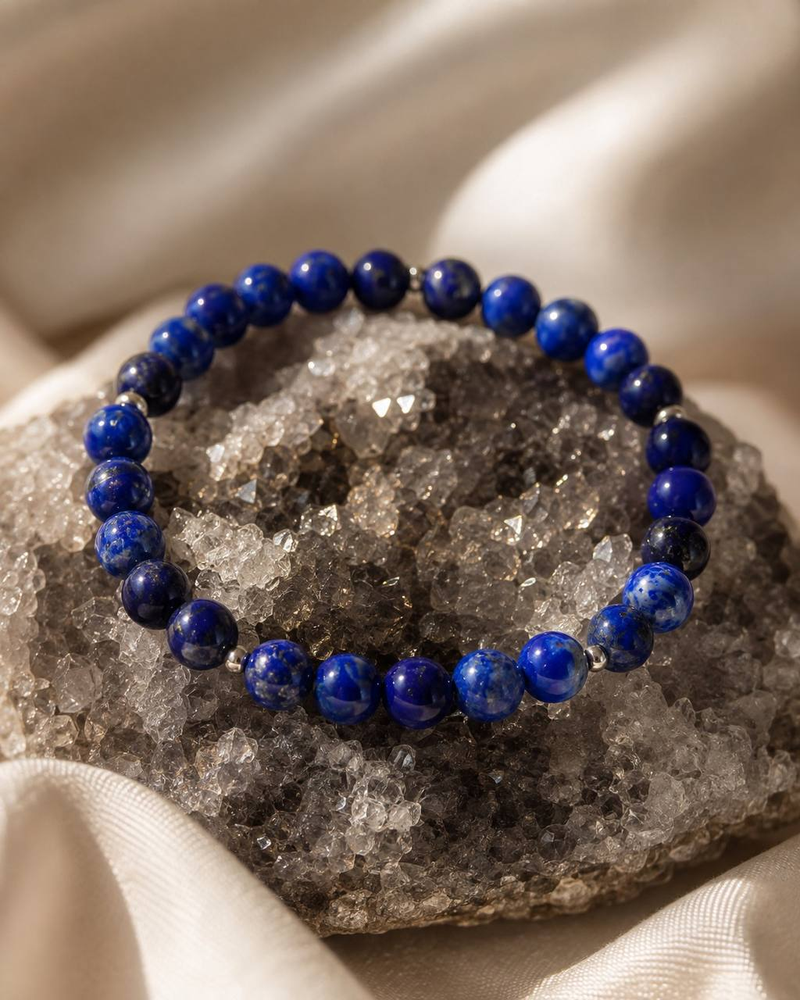
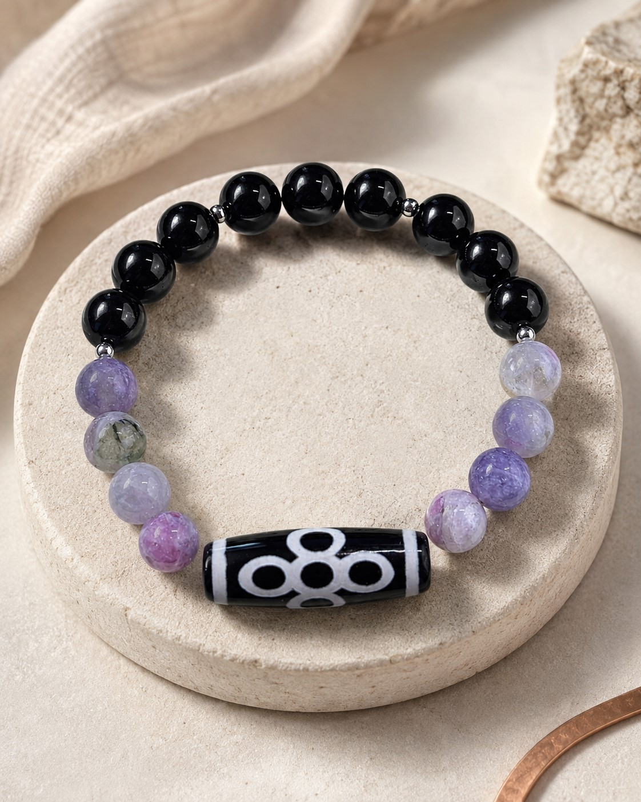
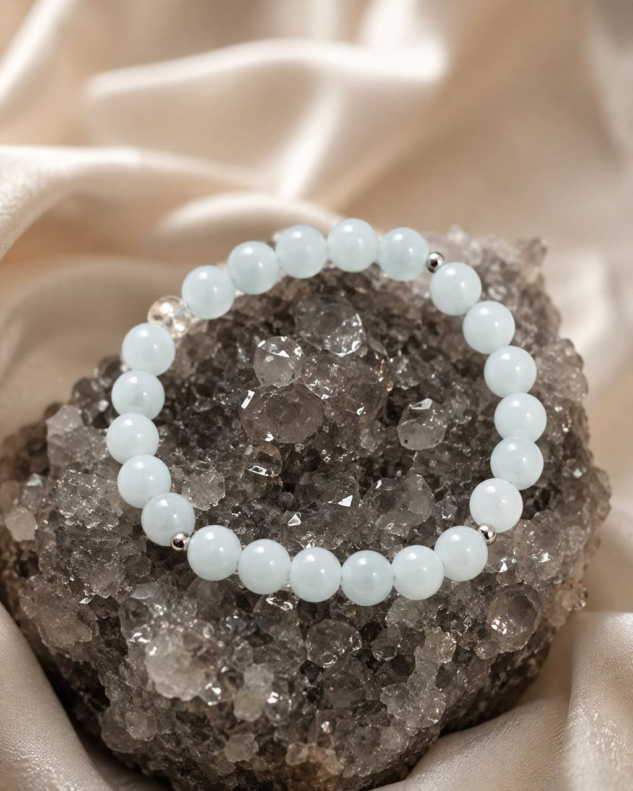
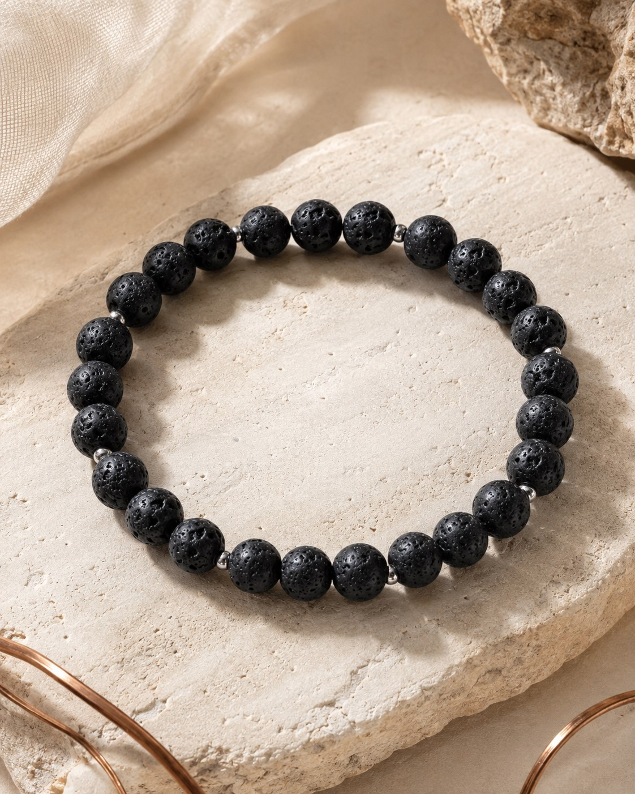
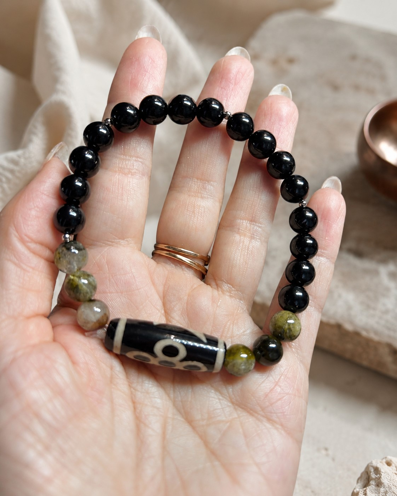

01
Твоя базовая энергия
Короткая расшифровка по дате рождения.
Людмила Караяни
Нумеролог · Цифровой психолог
Интерактивная диагностика по камням
Узнай, какой минерал может стать для тебя символической поддержкой с учётом даты рождения и того, что происходит в твоей жизни сейчас.



Твоя базовая энергия
Короткая расшифровка по дате рождения.
Два минерала
Основной камень и поддержка на текущий период.
Практический шаг
Без воды: одна понятная точка опоры.
Даже внешне похожие браслеты могут собираться под совершенно разные задачи: устойчивость, проявленность, спокойствие, деньги или отношения.




На фотографиях — примеры браслетов. Итоговая композиция всегда зависит от индивидуального подбора.
Начнём с основы
По дню и месяцу рождения мы определим число характера и число проявления. Имя нужно только для личного обращения в результате.
Посмотрим на сегодняшний день
Выбери один вариант, который откликается сильнее остальных.
Ещё немного конкретики
Выбери наиболее точное описание.
Твой персональный результат
Число характера
Число проявления
День и месяц рождения
Камень по числу характера
Фото минерала ↗Символическая поддержка под твой запрос
Фото минерала ↗Ты можешь носить минерал в браслете или украшении, положить его рядом с рабочим местом либо просто сохранить название и вернуться к нему позже.
Персональный подбор
Я соединяю нумерологию, психологию и работу с минералами. Смотрю не только на дату рождения, но и на то, что происходит с тобой сейчас: где нет опоры, что забирает силы и какую задачу должен поддерживать браслет.
Хочется глубже?
Я подберу минералы с учётом твоей даты рождения, текущего состояния и главного жизненного запроса. Не случайный набор бусин и не обещание, что украшение решит всё за тебя. А понятная композиция, где у каждого камня есть своя задача.